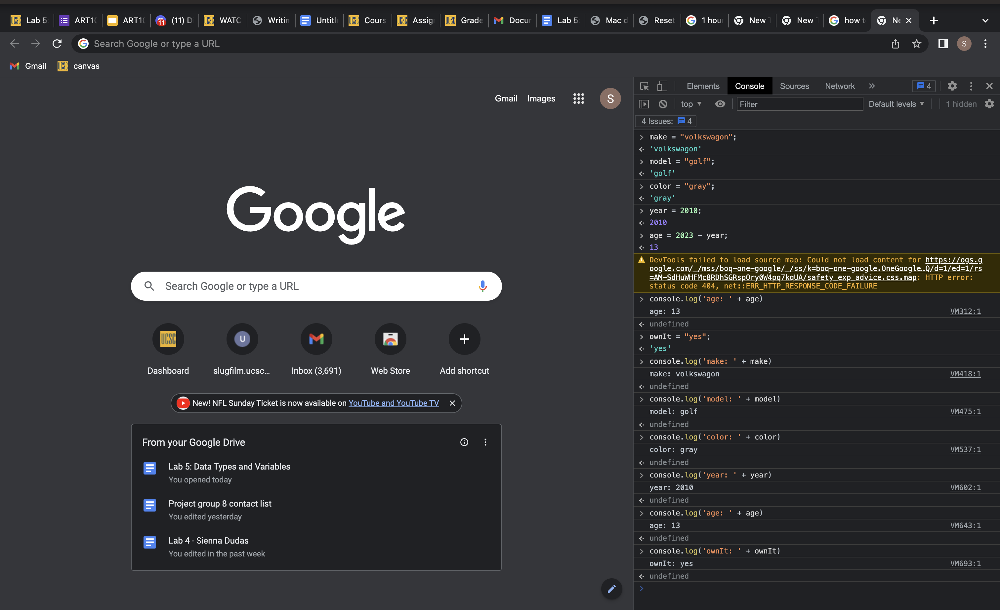
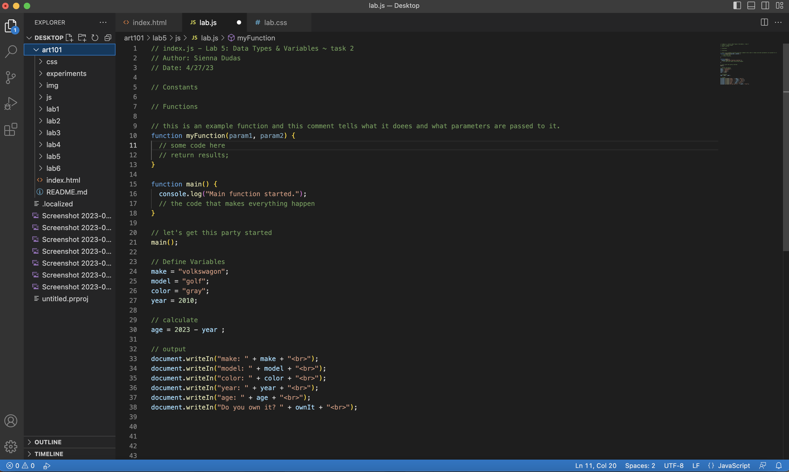

Lab 5: Data Types & Variables
Challenge
The challenge of Lab 5 was to input variables and data about our vechichle using javascript.
Problems
I did not run into any problems during this lab, everything went well and I understood the prompt.
Reflection
I enjoyed this assignment and love the freedom we have with each lab to further customize our webpages. This lab helped me learn javacript.
Results
Here are my results, as well as the script output.
 